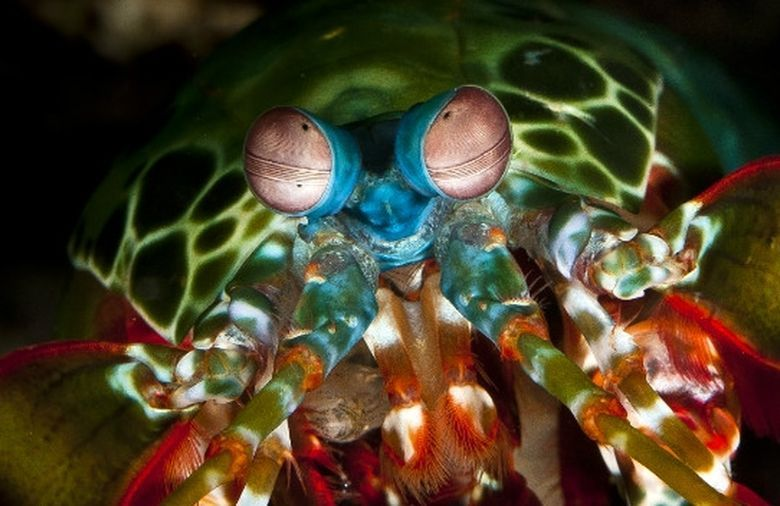
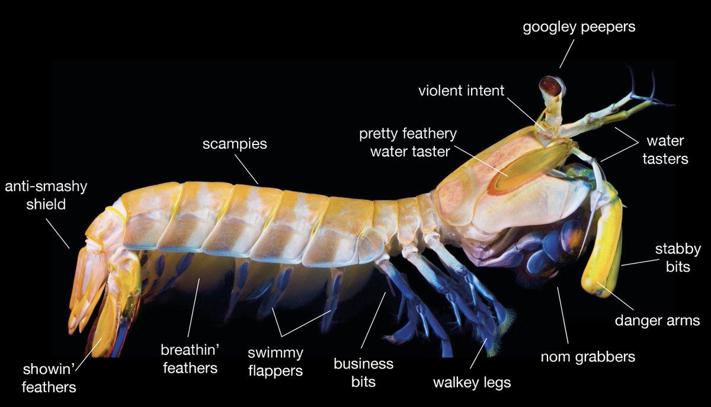

fatos interessantes sobre o Stomatopoda
Os olhos mais incríveis da natureza ficaram um pouco mais estranhos
Os olhos são testamentos da criatividade da evolução. Todos eles fazem as mesmas coisas básicas - detectam a luz e a convertem em sinais elétricos - mas de uma variedade incrível de maneiras. Existem olhos simples e compostos, lentes bifocais e rochosas , espelhos e fibras ópticas . E há olhos que são tão estranhos, tão constantemente surpreendentes que, após décadas de pesquisa, os cientistas apenas descobriram como funcionam, quanto mais por que evoluíram dessa forma. Para encontrá-los, você precisa dar um mergulho. Este é o olho de um camarão mantis - um animal marinho que não é nem mantis nem camarão, mas um parente próximo de caranguejos e lagostas. É um olho composto, feito de milhares de pequenas unidades, cada uma detectando a luz de forma independente. Aqueles na faixa intermediária - a faixa central que você pode ver na foto - são especiais. São eles que permitem ao animal ver as cores.
| Classificação Científica | |
|---|---|
| Reino: | Animalia |
| Filo: | Arthropoda |
| Subfilo: | Crustacea |
| Classe: | Malacrostaca |
| Subclasse: | Hoplocarida |
| Ordem: | Stomatopoda |
Fatos sobre o Stomatopoda
Soco a 80km/h: Conheça o Stomatopoda.
O camarão mantis é um crustáceo estomatópode, também conhecido como tamarutaca, lacraia-do-mar, lagosta-boxeadora ou camarão-louva-a-deus-palhaço. Dentre 400 espécies, o ‘Odontodactylus scyllarus’ é o que desfere um golpe mais violento: seu soco chega a 80 quilômetros por hora, aceleração semelhante a uma arma calibre .22. Com uma pressão resultante de 60 quilos por centímetro quadrado, o bicho consegue facilmente quebrar a carapaça de um caranguejo – ou até mesmo o vidro de um aquário.